Hiking | Palpa: The Queen Of Hills
 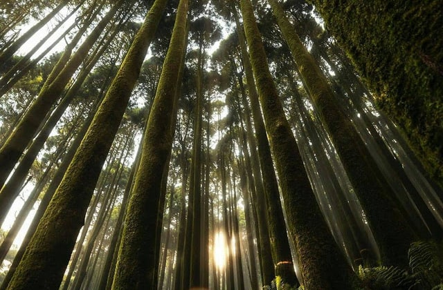
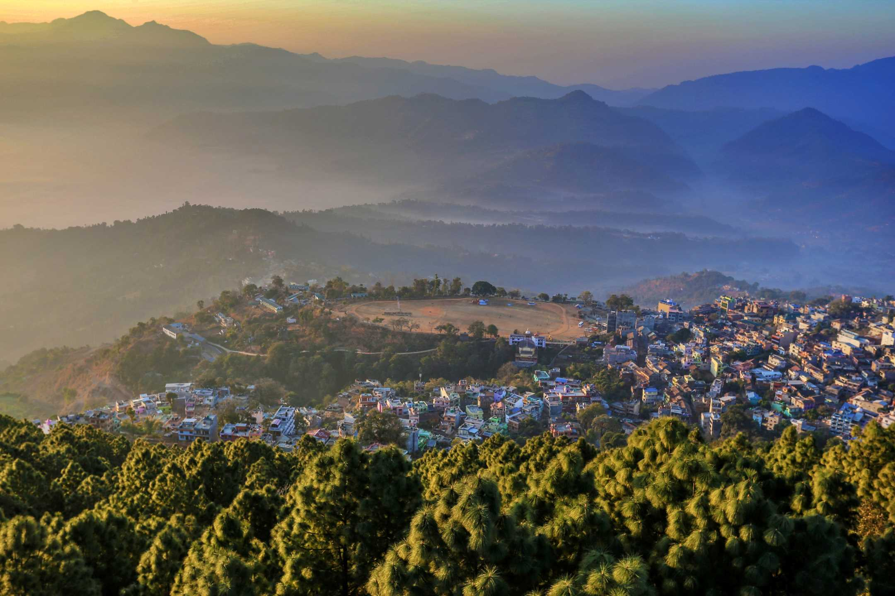
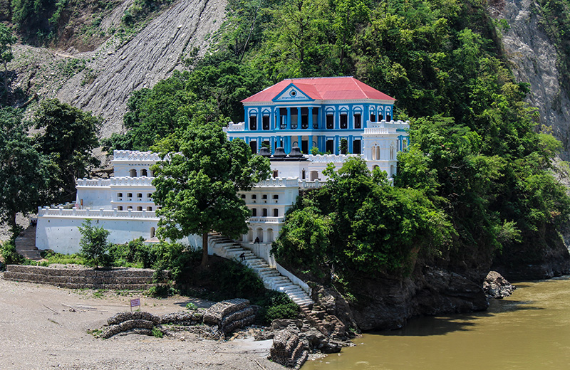
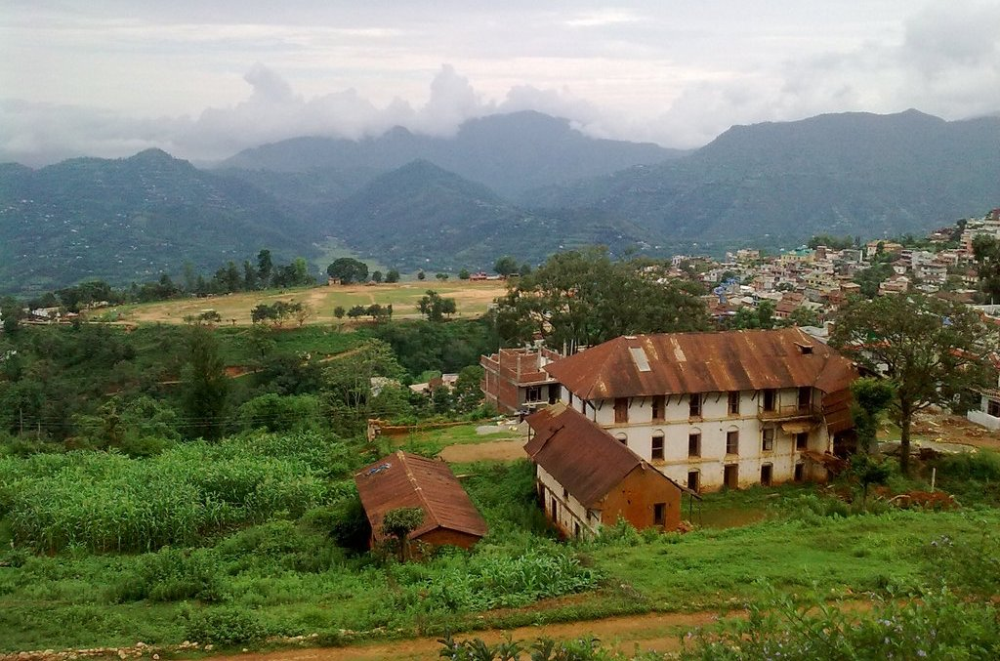
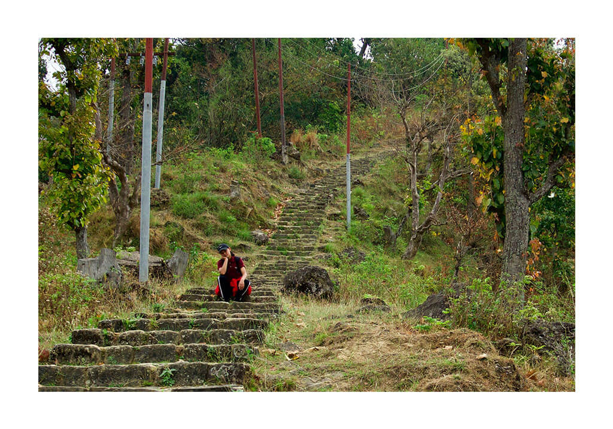
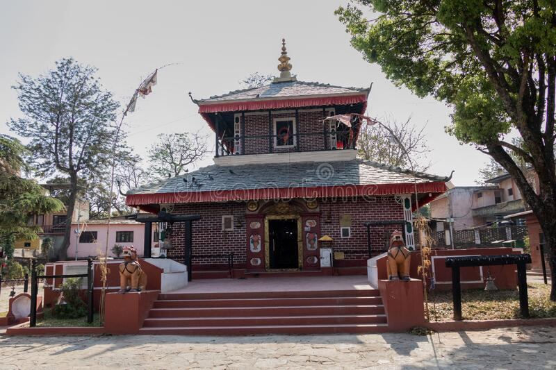
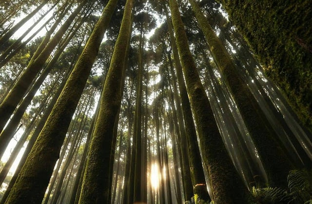
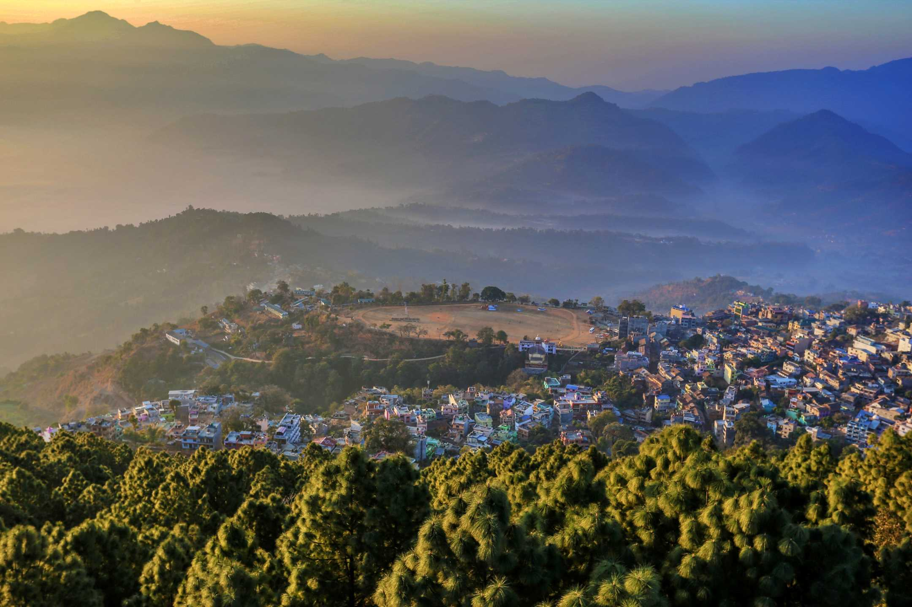
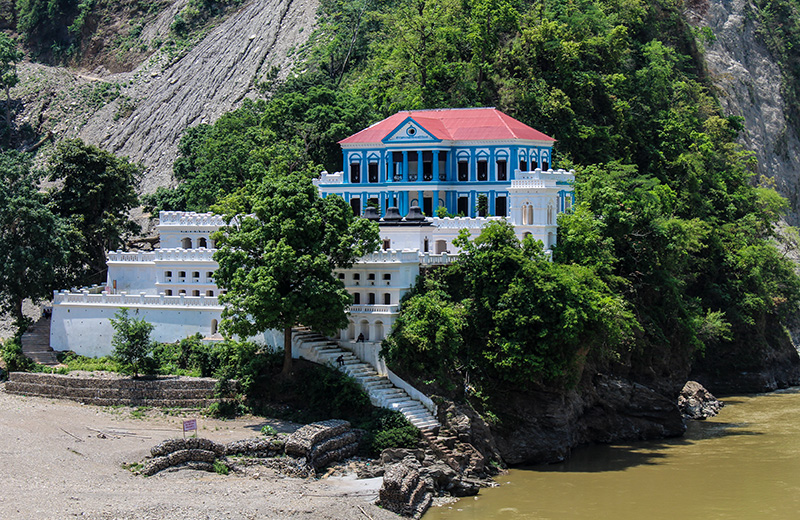
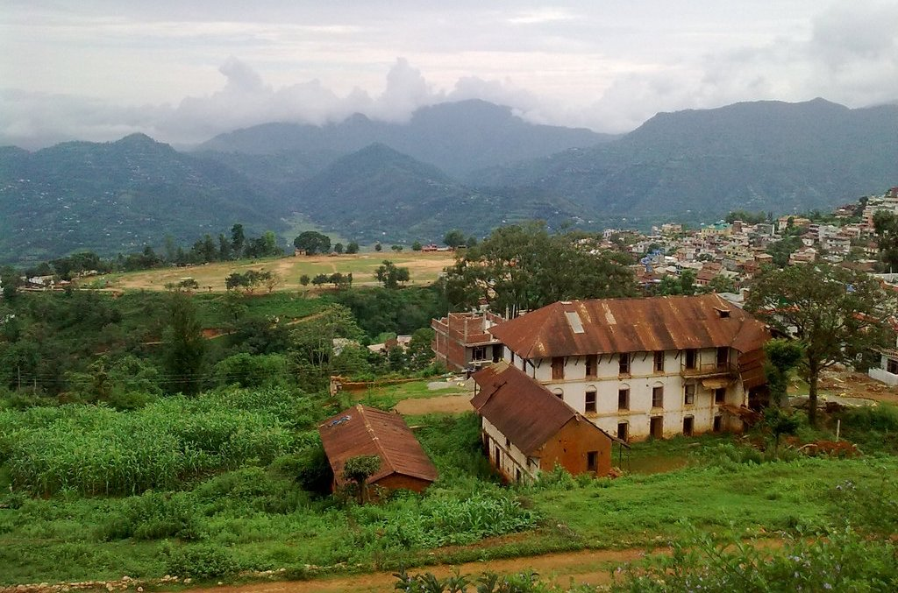
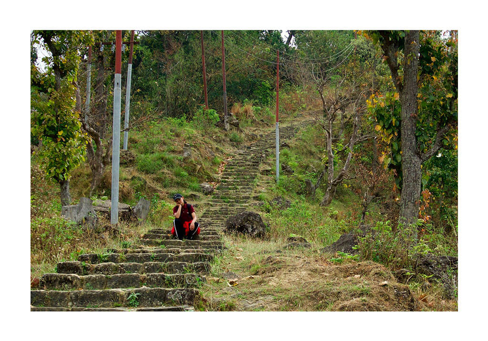
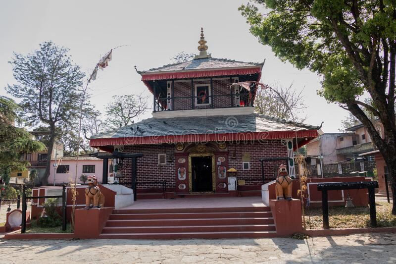
OVERVIEW
Tansen Hiking heads towards the former Capital of the Magar Kingdom of Tanahum from Pokhara.Tansen is a romantic medieval hill town, perched high above the Kaligandaki River on the road between Pokhara and Butwal.The narrow, winding streets are full of Newari shop houses and temples are Tansen’ charm.
One of the nicest one hour walk Shreenagar Dada (1600m) hill directly north of town.
The most famous sight of Tansen is Ranighat Durbar,which is on the east bank of Kali Gandaki River.It is known as Nepal’s Taj Mahal.This crumbling baroque place was bouit in 1896 by Khadga Shamsher Rana.
Tansen is also rich of art and temples like Bhimsen Mandir (Sacred Newari deity),Amar Nath Mandir (patron deity of lord Vishnu),Mahadev Mandir(Shiva, god of the god’ temple) Bhagwati Mandir (Mother Goddess)..etc.
many places like bagnas, bhairavnath temple , tudikhel, etc ate popularhere. never miss these places when you visit palpa. The queen of hills.
The Everest Gokyo Lake Trek incorporates the best features of the Khumbu. It begins with a beautiful short flight to Lukla. Similarly, you will visit famous Khumbu villages and settlements. The trekking trail goes through Namche Bazaar, Dole, and Machhermo, among others. All of the destinations are accompanied by majestic views of the Everest Himalayas. You can see beautiful mountain peaks like Cho Oyu, Makalu, Everest, Lhotse, and many more. The Everest Gokyo Lake Trek avoids the regular trekking trail. Correspondingly, it alternates between taking you through a less-traveled route. You can experience the Sherpa culture all along the journey. Mani stone walls and small chortens with prayer flags are constantly present along the journey. Moreover, you will also visit the Gokyo RI. It is particularly famous for being a natural vantage point besides Kalapatthar. You can see amazing panoramic views of the Everest massif from Gokyo, RI. The best time to do the Everest Gokyo Lake Trek is in spring and autumn. March to May and September to December are the best months to make the trip.